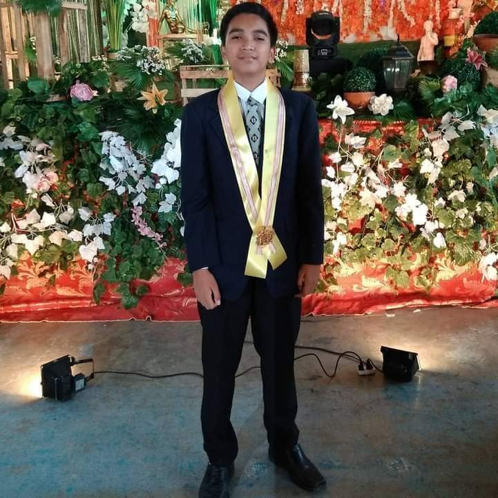
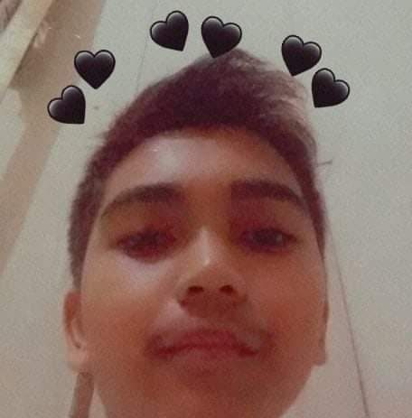

ABOUT MYSELF
Ramos II, Juanito M.
09617516388
Block 26 Lot 11, Goodwill Ave., Goodwill Homes 1, San Bartolome, Novaliches, Quezon City
Personal Information
Date of Birth: November 8, 2003
Place of Birth: Quezon City
Gender: Male
Civil Status: Single
Religion: Born Again/Christian
Nationality: Filipino
Educational Background
Elementary:
Jerusalem Christian Academy (2010-2015)
Junior High School:
San Bartolome High School(2015-2019)
Senior High School:
Metro Manila College(2019-2021)
Hobbies and Interests
•Sports(Basketball, Volleyball, and Badminton)
•Mobile Games
•Science and Technology
•Mathematics
Skills List
*Basic Communicative Skills
*Basic Skills in Formal Writing
*Basic Skills in Mobile Photography
*Able to Work in Long Hours
*Teachable, and can teach other people
Favorite Songs
1. Where Are You Now by Honor Society
2. Save Your Tears by The Weekend
3. In Your Eyes by The Weekend
4. Come Inside Of My Heart by IV of Spades
5. So Big by Iyaz
Best Pictures


Favorite Videos
The topic about HTML and CSS coding gave me a combination of fun, memorable experience, and most importantly, learnings that I acquired. Even though I have only have 1 device which is my cellphone, I still managed to learn and stay track with the lessons. I had learnings about making a website. I know that my output is not that presentable, but the important is I still gave my best and learned one of the important lessons to be tackled once I will be taking a computer engineering course. Also, I learned how to be resourceful. Even though I only have cellphone, I still became successful in making a website. Lastly, I learned how to become patient in making website. This was probably one of the most challenging outputs I had to submit as a student. Now that I have an idea about how to make this kind of stuffs, I am confident that it will be applicable to my future errands. Overall, it was a fun-filled and full of blast. I am grateful for this kind of experience I had before graduating.